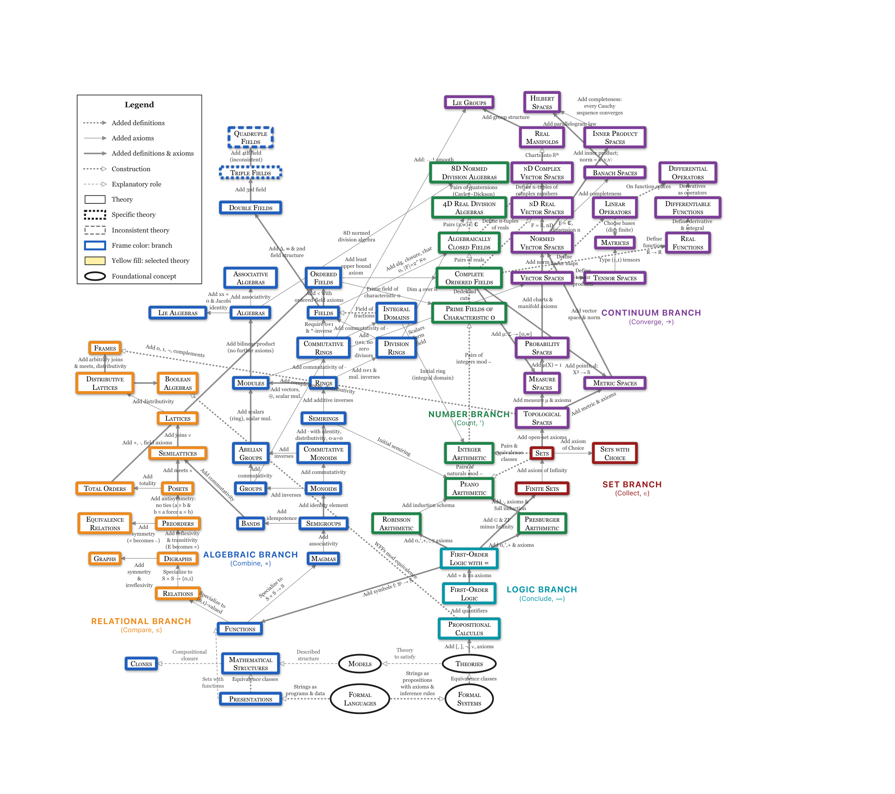

Definitions, key theorems, and model relations of a family tree of mathematical theories, plus the correctness of the MLISP language, are verified in Lean.
Abstract
I introduce MLISP, a Turing-complete language with nine single-character commands (a b c d f 0 i j k), and use it to define 88 mathematical structures and a family tree of 65 theories that they model, with three aims: Pedagogy: It presents the mathematical structures in a unified way, with standardized presentation tableaus that define them and axiomatized theories that describe them. Connections: It highlights how they are related in the family tree via added symbols, axioms, etc. While the full tree is obviously infinite, its lower parts naturally separate into six main branches: the relational branch, the algebraic branch, the logic branch, the number branch, the set branch and the continuum branch. Foundations: The definitions, key theorems and models of each entry are verified in Lean. Mathematical structures are defined as equivalence classes of presentations, which in a constructivist spirit are defined in a simple, explicit and self-contained way in standardized presentation tableaus with minimal human baggage. For finite structures, the generating functions are defined by lookup tables. For countably infinite ones, they are instead defined computationally using MLISP, since more complex languages such as Lean are massive overkill for rigorously defining standard arithmetic operations (for example, the program "jibjbfid" defines subtraction). An interactive version is available at https://tegmark.org/mathtree. The Lean code is public, also verifies the correctness of MLISP and includes 43% of the theorems from Mathlib 2026-10-11. \end{abstract}
Problem
Basic mathematical theories and structures lack a unified, human-readable presentation of how they relate to one another. There is also little agreement on how to rigorously define presentations and mathematical structures.
Approach
The author introduces MLISP, a Turing-complete language with nine single-character commands. MLISP is used to define 88 mathematical structures through standardized presentation tableaus: lookup tables for finite structures and short programs for countably infinite ones. These structures are organized into a family tree of 65 theories in six branches, with structures defined as equivalence classes of presentations. Lean is used to verify the definitions, key theorems and model relations, and to check the correctness of MLISP itself.
Results
A public interactive family tree and a public Lean codebase (github.com/mtegmark/mlisp9) are released. The Lean code verifies MLISP and the tree's model relations, and is reported to include 43% of the theorems from a Mathlib snapshot. The tree's arrows agree with Mathlib's "extends" constructions.

Figure 1: Family tree of mathematical theories. If you are reading this on a computer, you can click any of the boxes for details. You will find a fully interactive version at https://tegmark.org/mathtree . Boxes denote mathematical theories (equivalence classes of formal systems). Ovals, and the boxes Presentations , Mathematical Structures and Clones , denote foundational concepts that are not t